非規格装備まとめ
非規格装備は、1250レベル以上の狩場や一部コンテンツで入手できる特殊な装備です。
通常のオプションとは別枠で非規格オプションが付き、専用素材を使って鑑定、等級上昇、オプション追加、再抽選を行います。
概要

装備自体は青品扱いで、通常オプションとは別に非規格オプションを持ちます。未鑑定で入手したものは、専用素材で等級と非規格オプションを確認します。
非規格装備としての強化段階は一般、DX、ULTの3段階です。これは通常のアイテムグレードとは異なり、DX以上は非規格オプションが付き、ULTでは最大5枠まで扱えます。
等級別オプション数
| 等級 | 非規格オプション数 | 扱い |
|---|---|---|
| 一般 | 0個 | 鑑定後、必要に応じてDXへ強化します。 |
| DX | 1～2個 | 追加素材でオプション数を伸ばせます。 |
| ULT | 3～5個 | 非規格オプション枠の上限は5です。 |
入手方法
非規格装備は、装備レベルごとにドロップ対象となるモンスターレベルが変わります。1250Lv装備は1250Lv以上、1500Lv装備は1500Lv以上、1750Lv装備は1750Lv以上のモンスターから出現します。
この条件は通常狩場だけでなく、精鋭討伐などの討伐系コンテンツでも適用されます。
| 対象 | 内容 |
|---|---|
| 通常狩場・ダンジョン | 対象レベル以上の通常狩場・ダンジョンの全モンスターがドロップ対象です。 |
| 討伐系コンテンツ | 討伐デイリー、討伐ウィークリー、精鋭討伐、位相ボスも対象です。装備レベルに応じたモンスターレベル条件はここでも適用されます。 |
| 1500Lv装備 | 1500Lv以上のモンスターから出現します。 |
| 1750Lv装備 | 1750Lv以上のモンスターから出現します。 |
| その他 | コクーン闇商人などからも入手できます。 |
| ドロップ率の目安 | ドロップ率の強補正なしで、補正1時間あたりULT装備が1個、DX装備が複数個、各種ノードが1個程度を目安に見ています。 |
強化画面と使い方
非規格装備強化画面は8種の強化素材をダブルクリックして使うことで表示されます。各強化段階で消費するノードは1個ずつです。右側に表示される数値は、金のインゴットの必要個数です。
強化、オプション追加、再抽選、数値再設定はいずれも100%成功します。

| 手順 | やること | ポイント |
|---|---|---|
| 1 | 非規格装備または専用財貨を入手します。 | 装備、ノード、ダスト、チェストを分けて整理しておくと扱いやすいです。 |
| 2 | フェーズチューナーで未鑑定の非規格装備を鑑定します。 | 鑑定後に等級と非規格オプションを確認します。 |
| 3 | ノードを1個ずつ使って、等級上昇、非規格オプション追加、再抽選を行います。 | 各操作は100%成功します。必要なのは対象ノード1個と金のインゴットです。 |
| 4 | 不要な装備は分解してアモルファスダストにします。 | アモルファスダストはファザムレスチェストとの交換に使います。 |
強化素材一覧
各強化段階で消費するノードは1個です。金のインゴット欄の数値は、操作時に追加で必要になる金のインゴットの個数です。| アイテム | 用途 | 素材消費 | 金のインゴット | 主な入手方法 |
|---|---|---|---|---|
フェーズチューナー |
非規格装備の鑑定。 | 1個 | 1個 |
1250レベル以上フィールドモンスター、ファザムレスチェスト |
パワーノード |
一般からDXへの等級上昇、非規格オプション1個追加。 | 1個 | 2個 |
1250レベル以上フィールドモンスター、ファザムレスチェスト |
マイティーノード |
DXからULTへの等級上昇、非規格オプション1個追加。 | 1個 | 2個 |
1250レベル以上フィールドモンスター、ファザムレスチェスト |
キャパシティーノード |
DX等級の非規格オプション枠追加、非規格オプション1個追加。 | 1個 | 3個 |
1250レベル以上フィールドモンスター、ファザムレスチェスト |
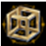 ディスクロージャーノード |
ULT等級の非規格オプション枠追加、非規格オプション1個追加。 | 1個 | 3個 |
1250レベル以上フィールドモンスター、ファザムレスチェスト |
エクセルノード |
DXからULTへの等級上昇、非規格オプション3個付与。ベースが入手困難な武器を一気に強化したい時に向きます。例として、入手難易度の高い1750Lv～のファナーリボルバーなどに使うことで、他の素材を節約しつつULT化できます。 | 1個 | 3個 |
1250レベル以上フィールドモンスター、ファザムレスチェスト |
インバーターノード |
非規格オプションのランダム変更。 | 1個 | 5個 |
1250レベル以上フィールドモンスター |
エニグマティックノード |
非規格オプション数値のランダム再設定。 | 1個 | 5個 |
1250レベル以上フィールドモンスター |
ファザムレスチェスト |
非規格装備、強化素材、アモルファスダストなどを入手できる箱。 | - | - | アモルファスダスト100個と交換 |
アモルファスダスト |
ファザムレスチェストの交換財貨。 | - | - | 非規格装備の分解など |
分解とファザムレスチェスト
ファザムレスチェストはアモルファスダスト100個と交換できます。
| 分解対象 | アモルファスダスト獲得個数 |
|---|---|
| 鑑定状態 一般 | 1～5個 |
| 未鑑定状態 一般 | 1～5個 |
| 鑑定状態 DX | 8～12個 |
| 未鑑定状態 DX | 13～17個 |
| 鑑定状態 ULT | 20～29個 |
| 未鑑定状態 ULT | 30～49個 |
| ファザムレスチェストの中身 | 個数 | 確率 |
|---|---|---|
| アモルファスダスト | 10個 | 50% |
| パワーノード | 1個 | 20% |
| マイティーノード | 1個 | 20% |
| キャパシティーノード | 1個 | 4% |
| ディスクロージャーノード | 1個 | 3% |
| エクセルノード | 1個 | 3% |
非規格装備一覧
アイテム検索に登録されている非規格装備204件を、1250、1500、1750の3段階でまとめています。アイテム検索から名前検索もできます。
| 画像 | 種類/部位 | 1250 | 1500 | 1750 | 基本性能 | 錬成オプション |
|---|---|---|---|---|---|---|
| 片手剣 | コモンソード | アンコモンソード | レアソード | 攻撃力 169~203(0.90秒) 射程距離 100 |
このアイテムの着用レベル -200 攻撃速度 +10％ スキルレベル+5 最終攻撃力10％増加 |
|
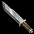 |
片手剣 | ファイターソード | ミリタリーソード | ブレイブソード | 攻撃力 174~209(1.00秒) 射程距離 100 物理致命打確率(％) +[1~3]％ |
このアイテムの着用レベル -200 攻撃速度 +10％ スキルレベル+5 最終攻撃力10％増加 |
| 両手剣 | ラージブレード | グレートブレード | ウォーブレード | 攻撃力 239~335(1.30秒) 射程距離 120 防御力 +2 |
このアイテムの着用レベル -200 攻撃速度 +10％ スキルレベル+5 最終攻撃力10％増加 |
|
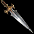 |
両手剣 | スマッシャー | ヘッドスマッシャー | シャープスマッシャー | 攻撃力 246~345(1.50秒) 射程距離 120 |
このアイテムの着用レベル -200 攻撃速度 +10％ スキルレベル+5 最終攻撃力10％増加 |
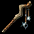 |
杖 | ねじれた杖 | 硬い杖 | ダイアモンドの杖 | 攻撃力 163~181(1.20秒) 射程距離 90 |
このアイテムの着用レベル -200 攻撃速度 +10％ スキルレベル+5 最終攻撃力10％増加 |
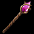 |
杖 | ブロンズスタッフ | アメジストスタッフ | ルニックスタッフ | 攻撃力 168~186(1.60秒) 射程距離 90 全スキルレベル +1 |
このアイテムの着用レベル -200 攻撃速度 +10％ スキルレベル+5 最終攻撃力10％増加 |
| 牙 | ギザギザの牙 | 野性的な牙 | 野蛮な牙 | 攻撃力 171~223(0.90秒) 射程距離 75 物理致命打確率(％) +[1~3]％ |
このアイテムの着用レベル -200 攻撃速度 +10％ スキルレベル+5 最終攻撃力10％増加 |
|
| 牙 | ラスティーファング | シャープファング | ワイルドファング | 攻撃力 176~229(1.00秒) 射程距離 75 |
このアイテムの着用レベル -200 攻撃速度 +10％ スキルレベル+5 最終攻撃力10％増加 |
|
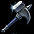 |
メイス | ストーンハンマー | 戦場ハンマー | バトルハンマー | 攻撃力 244~293(1.50秒) 射程距離 100 vs アンデッド物理ダメージ増加 10％ |
このアイテムの着用レベル -200 攻撃速度 +10％ スキルレベル+5 最終攻撃力10％増加 |
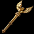 |
メイス | ブレスドセプター | ホーリーセプター | ディバインセプター | 攻撃力 237~285(1.30秒) 射程距離 100 vs アンデッド魔法ダメージ増加 10％ vs アンデッド型キャラクターの魔法ダメージ 10％ 増加 |
このアイテムの着用レベル -200 攻撃速度 +10％ スキルレベル+5 最終攻撃力10％増加 |
| 翼 | 小さな翼 | 大きな翼 | 羽毛で覆われた翼 | 攻撃力 178~229(1.20秒) 射程距離 400 攻撃速度増加 3％ |
このアイテムの着用レベル -200 攻撃速度 +10％ スキルレベル+5 最終攻撃力10％増加 |
|
| 翼 | エッジウィング | レーザーウィング | ブレーデッドウィング | 攻撃力 183~236(1.30秒) 射程距離 400 |
このアイテムの着用レベル -200 攻撃速度 +10％ スキルレベル+5 最終攻撃力10％増加 |
|
| 弓 | ボーンボウ | プレデターボウ | アペックスボウ | 攻撃力 170~337(1.30秒) 射程距離 500 vs 動物物理ダメージ増加 10％ |
このアイテムの着用レベル -200 攻撃速度 +10％ スキルレベル+5 最終攻撃力10％増加 |
|
| 弓 | レンジャーボウ | アサシンボウ | スナイパーボウ | 攻撃力 175~347(1.60秒) 射程距離 500 |
このアイテムの着用レベル -200 攻撃速度 +10％ スキルレベル+5 最終攻撃力10％増加 |
|
| 槍 | ジャベリン | ウィングジャベリン | スウィフトジャベリン | 攻撃力 179~358(1.40秒) 射程距離 170 全スキルレベル +1 |
このアイテムの着用レベル -200 攻撃速度 +10％ スキルレベル+5 最終攻撃力10％増加 |
|
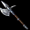 |
槍 | 戦闘槍 | 軍用の槍 | 戦争槍 | 攻撃力 184~368(1.60秒) 射程距離 170 |
このアイテムの着用レベル -200 攻撃速度 +10％ スキルレベル+5 最終攻撃力10％増加 |
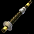 |
笛 | パイプ | 王室のパイプ | 帝国のパイプ | 攻撃力 137~137(1.20秒) 射程距離 300 カリスマ +[10~15] |
このアイテムの着用レベル -200 攻撃速度 +10％ スキルレベル+5 最終攻撃力10％増加 |
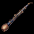 |
笛 | パンフルート | スチールパンフルート | マジックパンフルート | 攻撃力 141~141(1.30秒) 射程距離 400 |
このアイテムの着用レベル -200 攻撃速度 +10％ スキルレベル+5 最終攻撃力10％増加 |
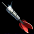 |
短剣 | アイアンダート | スチールダート | チタニウムダート | 攻撃力 156~246(1.00秒) 射程距離 450 無限弾丸 |
このアイテムの着用レベル -200 攻撃速度 +10％ スキルレベル+5 最終攻撃力10％増加 |
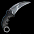 |
短剣 | スローイングナイフ | コンバットナイフ | ヒットマンズナイフ | 攻撃力 161~253(1.20秒) 射程距離 450 無限弾丸 物理致命打確率(％) +[1~3]％ |
このアイテムの着用レベル -200 攻撃速度 +10％ スキルレベル+5 最終攻撃力10％増加 |
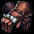 |
格闘武器 | ブレスナックル | スチールナックル | アイノックスナックル | 攻撃力 87~94(0.40秒) 射程距離 75 物理命中率 +[2~3]％ |
このアイテムの着用レベル -200 攻撃速度 +10％ スキルレベル+5 最終攻撃力10％増加 |
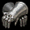 |
格闘武器 | スチールフィスト | メタルフィスト | チタニウムフィスト | 攻撃力 90~97(0.50秒) 射程距離 75 |
このアイテムの着用レベル -200 攻撃速度 +10％ スキルレベル+5 最終攻撃力10％増加 |
| 鞭 | スリムウィップ | スプリットウィップ | テラーウィップ | 攻撃力 217~260(1.20秒) 射程距離 180 攻撃速度増加 3％ |
このアイテムの着用レベル -200 攻撃速度 +10％ スキルレベル+5 最終攻撃力10％増加 |
|
| 鞭 | 蛇腹剣 | ウィップソード | デーモンウィップソード | 攻撃力 223~268(1.30秒) 射程距離 180 |
このアイテムの着用レベル -200 攻撃速度 +10％ スキルレベル+5 最終攻撃力10％増加 |
|
| スリング | リボンスリング | ロープスリング | ストラップスリング | 攻撃力 204~225(1.30秒) 射程距離 550 |
このアイテムの着用レベル -200 攻撃速度 +10％ スキルレベル+5 最終攻撃力10％増加 |
|
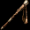 |
スリング | スリングスティック | スリングポール | スリングロード | 攻撃力 210~232(1.40秒) 射程距離 550 健康 +[10~15] |
このアイテムの着用レベル -200 攻撃速度 +10％ スキルレベル+5 最終攻撃力10％増加 |
| ワンド | バタフライマイク | ピクシーマイク | フェアリーマイク | 攻撃力 171~194(1.00秒) 射程距離 80 |
このアイテムの着用レベル -200 攻撃速度 +10％ スキルレベル+5 最終攻撃力10％増加 |
|
| ワンド | ステラワンド | ギャラクシーワンド | コスミックワンド | 攻撃力 176~200(1.10秒) 射程距離 80 最大CP増加 [1~3]％ |
このアイテムの着用レベル -200 攻撃速度 +10％ スキルレベル+5 最終攻撃力10％増加 |
|
| 鎌 | バトルサイズ | ミリタリーサイズ | ウォーサイズ | 攻撃力 193~238(1.60秒) 射程距離 105 力 +[10~15] |
このアイテムの着用レベル -200 攻撃速度 +10％ スキルレベル+5 最終攻撃力10％増加 |
|
| 鎌 | ダブルサイズ | スピナーサイズ | スパイラルサイズ | 攻撃力 188~231(1.50秒) 射程距離 105 |
このアイテムの着用レベル -200 攻撃速度 +10％ スキルレベル+5 最終攻撃力10％増加 |
|
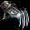 |
クロー | スプリッタークロー | サベージクロー | クルーアルクロー | 攻撃力 150~181(0.90秒) 射程距離 60 物理命中率 +[2~3]％ |
このアイテムの着用レベル -200 攻撃速度 +10％ スキルレベル+5 最終攻撃力10％増加 |
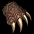 |
クロー | ベアーフットクロー | ワイルドクロー | プライマルクロー | 攻撃力 154~186(1.00秒) 射程距離 60 |
このアイテムの着用レベル -200 攻撃速度 +10％ スキルレベル+5 最終攻撃力10％増加 |
| 本 | 輝く古書 | 荘厳な古書 | 神聖な古書 | 攻撃力 170~204(1.00秒) 射程距離 400 |
このアイテムの着用レベル -200 攻撃速度 +10％ スキルレベル+5 最終攻撃力10％増加 |
|
| 本 | 太陽の記録 | 太陽の本 | 太陽の経典 | 攻撃力 175~210(1.20秒) 射程距離 400 魔法攻撃時、光属性の追加ダメージ50~80 |
このアイテムの着用レベル -200 攻撃速度 +10％ スキルレベル+5 最終攻撃力10％増加 |
|
| 双剣 | ヴィジランテツインソード | ヴェンジェンスツインソード | アベンジャーツインソード | 攻撃力 254~302(1.50秒) 射程距離 100 攻撃速度増加 3％ |
このアイテムの着用レベル -200 攻撃速度 +10％ スキルレベル+5 最終攻撃力10％増加 |
|
| 双剣 | グラディエーターディアルソード | レブルデュアルソード | リベレーターデュアルソード | 攻撃力 261~311(1.60秒) 射程距離 100 |
このアイテムの着用レベル -200 攻撃速度 +10％ スキルレベル+5 最終攻撃力10％増加 |
|
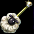 |
ほうき | 羊毛のほうき | 灰色の羊毛のほうき | 黒色の羊毛のほうき | 攻撃力 158~205(0.80秒) 射程距離 110 |
このアイテムの着用レベル -200 攻撃速度 +10％ スキルレベル+5 最終攻撃力10％増加 |
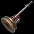 |
ほうき | フラワースイーパー | グラウンドスイーパー | ランドスイーパー | 攻撃力 163~211(0.90秒) 射程距離 110 移動速度増加 3％ |
このアイテムの着用レベル -200 攻撃速度 +10％ スキルレベル+5 最終攻撃力10％増加 |
| ダークコア | 不透明なコア | ブラックコア | ベンタブラックコア | 攻撃力 125~136(1.20秒) 射程距離 90 |
このアイテムの着用レベル -200 攻撃速度 +10％ スキルレベル+5 最終攻撃力10％増加 |
|
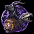 |
ダークコア | ビーストオーブ | モンスターオーブ | キメラオーブ | 攻撃力 129~140(1.40秒) 射程距離 90 敏捷 +[10~15] |
このアイテムの着用レベル -200 攻撃速度 +10％ スキルレベル+5 最終攻撃力10％増加 |
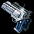 |
双拳銃 | カービンリボルバー | マグナムリボルバー | 大口径リボルバー | 攻撃力 155~187(1.30秒) 射程距離 450 |
このアイテムの着用レベル -200 攻撃速度 +10％ スキルレベル+5 最終攻撃力10％増加 |
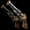 |
双拳銃 | スピーディーリボルバー | スウィフトリボルバー | ファナーリボルバー | 攻撃力 151~182(1.20秒) 射程距離 450 物理回避率(％) +3％ |
このアイテムの着用レベル -200 攻撃速度 +10％ スキルレベル+5 最終攻撃力10％増加 |
| 錬金石 | レッドジェム | スカーレットジェム | プロミネンスジェム | 攻撃力 127~146(1.50秒) 射程距離 360 |
このアイテムの着用レベル -200 攻撃速度 +10％ スキルレベル+5 最終攻撃力10％増加 |
|
| 錬金石 | ノーザングレイシャー | アンタークティックグレイシャー | インターステラーグレイシャー | 攻撃力 131~150(1.60秒) 射程距離 360 全スキルレベル +1 |
このアイテムの着用レベル -200 攻撃速度 +10％ スキルレベル+5 最終攻撃力10％増加 |
|
| アンカー | グラビティアンカー | ハイグラビティアンカー | マッシヴグラビティアンカー | 攻撃力 231~279(1.40秒) 射程距離 115 |
このアイテムの着用レベル -200 攻撃速度 +10％ スキルレベル+5 最終攻撃力10％増加 |
|
| アンカー | チェーンドハープーン | ビッグチェーンドハープーン | ジャイアントチェーンドハープーン | 攻撃力 238~287(1.50秒) 射程距離 115 物理致命打確率(％) +[1~3]％ |
このアイテムの着用レベル -200 攻撃速度 +10％ スキルレベル+5 最終攻撃力10％増加 |
|
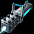 |
大砲 | ライトキャノン | ニンブルキャノン | フェザリーキャノン | 攻撃力 280~341(1.80秒) 射程距離 480 |
このアイテムの着用レベル -200 攻撃速度 +10％ スキルレベル+5 最終攻撃力10％増加 |
| 大砲 | ゲートブレイカー | ラムパートブレイカー | キャッスルブレイカー | 攻撃力 288~351(2.00秒) 射程距離 480 物理攻撃力増加 [10~20]％ 物理ダメージ [10~20]％ 増加 |
このアイテムの着用レベル -200 攻撃速度 +10％ スキルレベル+5 最終攻撃力10％増加 |
|
| 冠 | 骨の冠 | 呪いの冠 | 儀式の冠 | 防御力 +[8~10] 全ての属性攻撃力増加 [5~10]％ 全ての属性ダメージ [5~10]％ 増加 |
このアイテムの着用レベル -200 知識 200 増加 スキルレベル+2 魔法致命打確率(％) +10％ 魔法致命打発動確率 10％ 増加 |
|
| 冠 | 木の枝の冠 | 蔓の冠 | 棘の冠 | 防御力 +[8~11] | このアイテムの着用レベル -200 知識 200 増加 スキルレベル+2 魔法致命打確率(％) +10％ 魔法致命打発動確率 10％ 増加 |
|
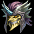 |
ヘルメット | インプヘルメット | デモニックヘルメット | フィンディッシュヘルメット | 防御力 +[18~23] 物理攻撃力増加 [10~20]％ 物理ダメージ [10~20]％ 増加 |
このアイテムの着用レベル -200 力 200 増加 スキルレベル+2 被ダメージ時、物理ダブル クリティカルダメージ 10％ 減少 |
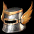 |
ヘルメット | フェザードヘルメット | ウィングヘルメット | 天空のヘルメット | 防御力 +[20~25] | このアイテムの着用レベル -200 力 200 増加 スキルレベル+2 被ダメージ時、物理ダブル クリティカルダメージ 10％ 減少 |
| 共用鎧 | インプスキン | デモニックスキン | フィンディッシュスキン | 防御力 +[36~45] ダメージ リターン [1~3]％ |
このアイテムの着用レベル -200 防御力 +80％ スキルレベル+2 被ダメージ時、物理ダブル クリティカルダメージ 10％ 減少 |
|
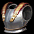 |
共用鎧 | バトルアーマー | グラディエーターアーマー | フルメタルアーマー | 防御力 +[39~49] | このアイテムの着用レベル -200 防御力 +80％ スキルレベル+2 被ダメージ時、物理ダブル クリティカルダメージ 10％ 減少 |
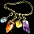 |
ネックレス | ひび割れたタリスマン | タリスマン | 完全なるタリスマン | 全スキルレベル +1 | このアイテムの着用レベル -200 運 200 増加 スキルレベル+2 回避率 +10％ |
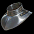 |
ネックレス | ゴルジェット | エレガントゴルジェット | ロイヤルゴルジェット | 物理決定打確率(％) +[3~5]％ | このアイテムの着用レベル -200 運 200 増加 スキルレベル+2 回避率 +10％ |
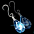 |
イヤリング | ウォータードロップイヤリング | レインドロップイヤリング | ティアドロップイヤリング | 呪い抵抗(％) +[10~15]％ | このアイテムの着用レベル -200 カリスマ 200 増加 スキルレベル+2 CP獲得ボーナス 10％ 増加 |
| イヤリング | バタフライイヤリング | ピクシーイヤリング | フェアリーイヤリング | 低下抵抗(％) +[10~15]％ | このアイテムの着用レベル -200 カリスマ 200 増加 スキルレベル+2 CP獲得ボーナス 10％ 増加 |
|
| マント | ぼろぼろのコート | 旅行者のコート | 巡礼者のコート | 移動速度増加 3％ | このアイテムの着用レベル -200 カリスマ 200 増加 スキルレベル+2 CP獲得ボーナス 10％ 増加 |
|
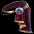 |
マント | 高貴なマント | 高官のマント | 王室のマント | 全属性抵抗(％) +3％ | このアイテムの着用レベル -200 カリスマ 200 増加 スキルレベル+2 CP獲得ボーナス 10％ 増加 |
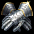 |
グローブ | スチールガントレット | メタルガントレット | チタニウムガントレット | 防御力 +[10~12] | このアイテムの着用レベル -200 命中率 +10％ スキルレベル+2 攻撃速度 +10％ |
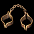 |
グローブ | 簡易手錠 | 鉄の手錠 | 囚人の手錠 | 防御力 +[9~11] 物理命中率 +[4~6]％ |
このアイテムの着用レベル -200 命中率 +10％ スキルレベル+2 攻撃速度 +10％ |
| ブレスレット | 色褪せたブレスレット | 金のブレスレット | 燦爛なブレスレット | 防御力 +[6~9] 変身速度増加 [10~20]％ |
このアイテムの着用レベル -200 知恵 200 増加 スキルレベル+2 攻撃速度 +10％ |
|
| ブレスレット | ドーニックチェーン | ビーズチェーン | ジュエリーブレスレット | 防御力 +[7~10] | このアイテムの着用レベル -200 知恵 200 増加 スキルレベル+2 攻撃速度 +10％ |
|
| ベルト | 細いベルト | 厚いベルト | 重いベルト | 防御力 +[21~25] スタックアイテム 15個 スタック アイテム 15個 |
このアイテムの着用レベル -200 健康 200 増加 スキルレベル+2 最大HP +500 最大体力 500 増加 |
|
| ベルト | ぼろぼろのベルト | 旅行者のベルト | 巡礼者のベルト | 防御力 +[20~23] スタックアイテム 20個 スタック アイテム 20個 |
このアイテムの着用レベル -200 健康 200 増加 スキルレベル+2 最大HP +500 最大体力 500 増加 |
|
| ブーツ | ぼろぼろの長靴 | 旅行者の長靴 | 巡礼者の長靴 | 防御力 +[16~20] 集中力 +[3~5] |
このアイテムの着用レベル -200 敏捷 200 増加 スキルレベル+2 移動速度 +10％ |
|
| ブーツ | 従者の靴 | 聖戦士の靴 | 聖騎士の靴 | 防御力 +[17~21] | このアイテムの着用レベル -200 敏捷 200 増加 スキルレベル+2 移動速度 +10％ |
強化済み非規格装備の例

接頭語一覧
鑑定後の非規格装備名に付く接頭語です。接頭語は表示名であり、非規格オプションの抽選内容を直接示すものではありません。| 接頭語 | |||
|---|---|---|---|
| 灰で覆われた | 夜を染める | 崩れ落ちない | 時間の中に埋もれた |
| 根深い | 地下から湧き上がった | 海を燃やす | 深淵を眠らせる |
| 真理に辿り着いた | 歓喜に満ちた | 光栄な | 異界から訪れた |
| 凍てついた | 終末を迎える | 本質を見抜く | 心を壊す |
| 静寂に響く | 位相が転換した | 時を止める | 地獄に残った |
| 朗らかな | 樹木を抜く | うごめく | 歌を歌う |
| 咆哮する | 審判する | 運命に抗う | 掴めない |
| 年季が入った | 規格に合う | 吹きすさぶ | 苦痛な |
| 岩を誘惑する | 狂気を宿した | 仕返しする | 罪を宣告する |
| 永劫を見届ける | 切り裂く | 万古不易な | 天を裂く |
| 筆舌に尽くしがたい | 神獣が祝福した | 地軸を揺るがす | 息の根を断つ |
| 天を遮る | 奇怪に歪んだ | 激烈に憤怒する | 止まらない |
| 明滅する | 完全無欠な | 定義できない | 時空を越える |
| 賛美する | 描写できない | 夜明けを開く | 憎悪で覆われた |
| 復讐を求める | 境界を越える | 山を分かつ | 永遠に朽ち果てる |
注意点
| 項目 | 内容 |
|---|---|
| 取引 | アモルファスダストは取引不可です。その他の非規格財貨や非規格装備は取引できます。 |
| 装備の扱い | 非規格装備は最初からNx扱いです。封印解放などを含め、個別表示はアイテム検索の詳細ページで確認してください。 |
| 段階強化 | ＜非規格＞段階をN->DXやDX-＞ULTにしてもベースは元のままです。 上記の装備一覧のベースは1750のベースを入手した場合はULT非規格にしてもベースは1750のまま。 従来のアイテム等級と名称が同じであるため、混同しないよう注意。 |
| 既存強化 | 製錬は上級まで付きます。異次元、青再構成、青増幅、お守り、BF強化を行っても、非規格オプションは残ります。 |
| エンチャ・修理 | 青品の扱いのため、エンチャ・修理の際はエンチャ文書・魔法のボンドを使います。ユニークアイテムではないため、エンチャ水晶や天上は使えません。 |
関連リンク
| ページ | 内容 |
|---|---|
| 非規格オプション一覧 | 非規格オプション候補と数値帯を確認するためのメインページです。 |
| アイテム検索 | 非規格装備やNxアイテムを名前、部位、効果で検索できます。 |
| 韓国アップデート情報 | 等級、素材、分解、チェスト確率、装備リストの元情報です。 |